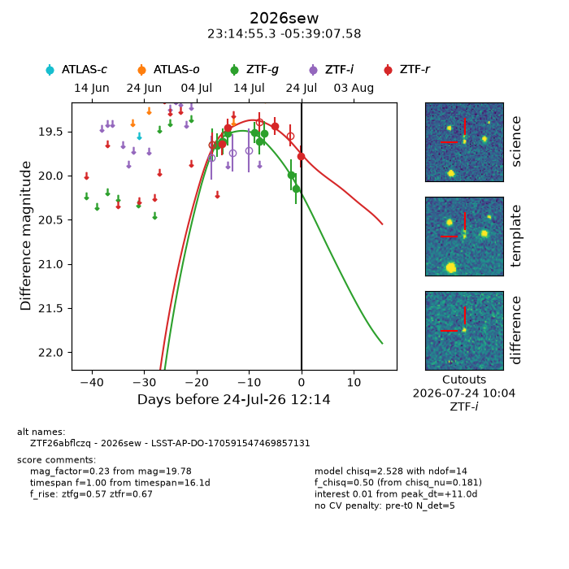
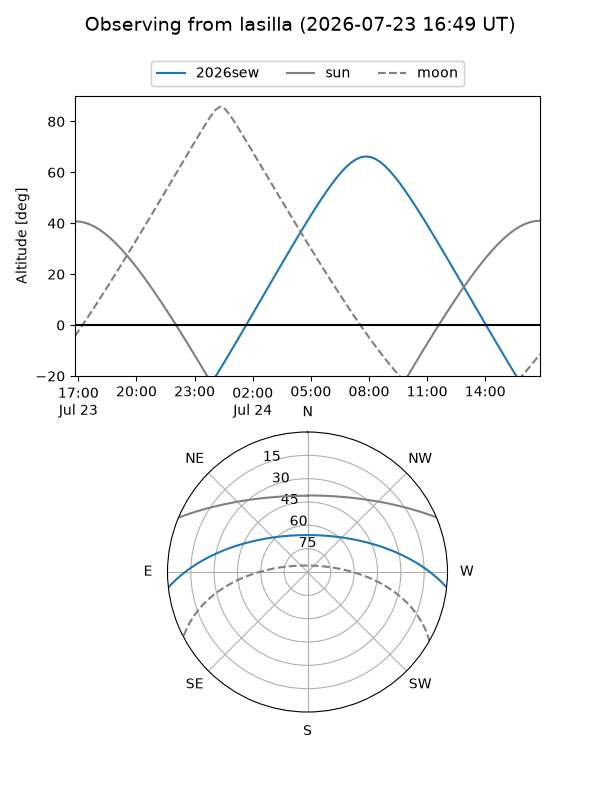
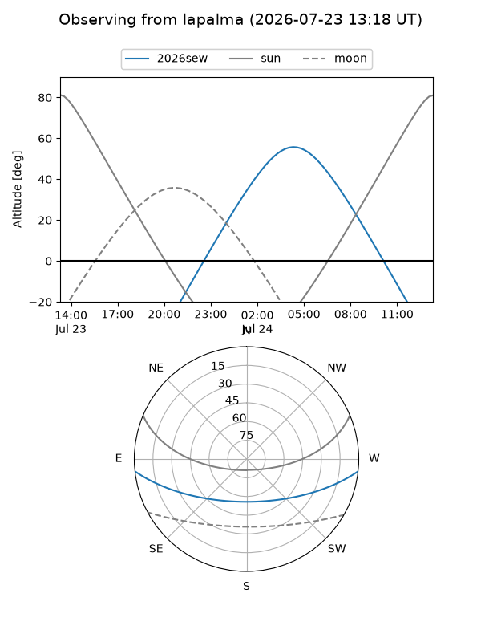
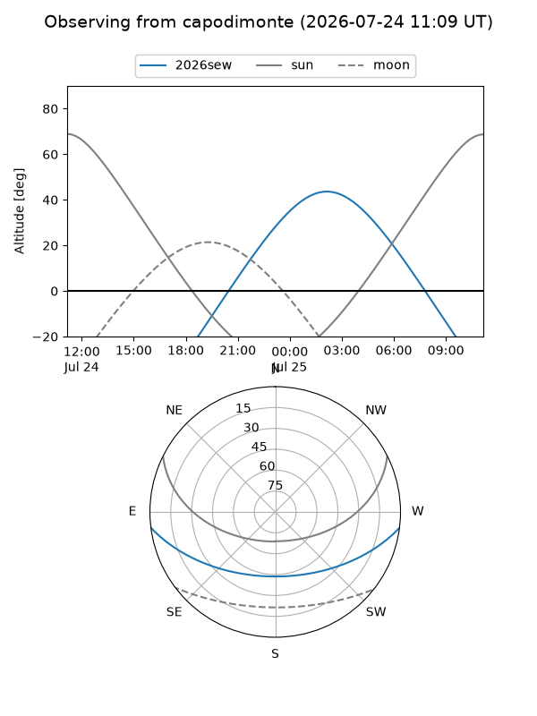
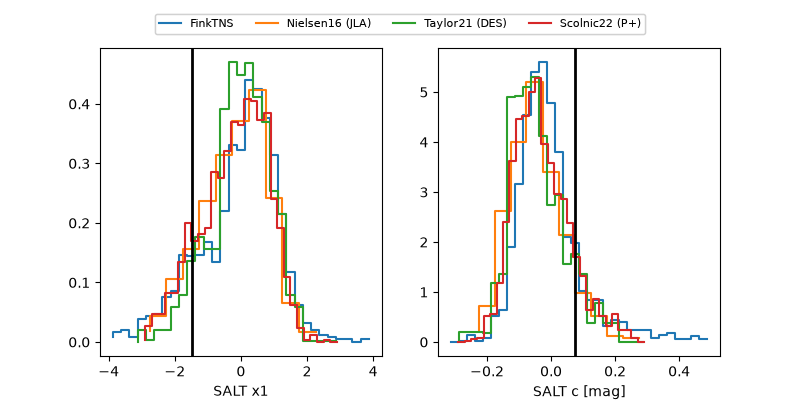

2026sew
Target 2026sew at 2026-07-24 12:16
Aliases and brokers:
FINK-ZTF: ztf.fink-portal.org/ZTF26abflczq
Lasair-ZTF: lasair-ztf.lsst.ac.uk/objects/ZTF26abflczq
ALeRCE-ZTF: alerce.online/object/ZTF26abflczq
YSE-PZ: ziggy.ucolick.org/yse/transient_detail/2026sew
TNS name: wis-tns.org/object/2026sew
Direct TNS query: direct search
alt names
ZTF26abflczq (ztf,fink_ztf)
2026sew (tns,yse)
LSST-AP-DO-170591547469857131 (iau_lsst)
Coordinates:
equatorial (ra, dec) = 348.7305,-5.65211
equatorial (HMS+DMS) = 23:14:55.33,-05:39:07.58
galactic (l, b) = (71.6796,-58.56011)
Flags:
TNS type: nan
peak dt: +11.0
Photometry:
last ztfg=20.15, ztfr=19.78
8 ztfg, 4 ztfr detections
Lightcurve

Visibility



Additional plots
